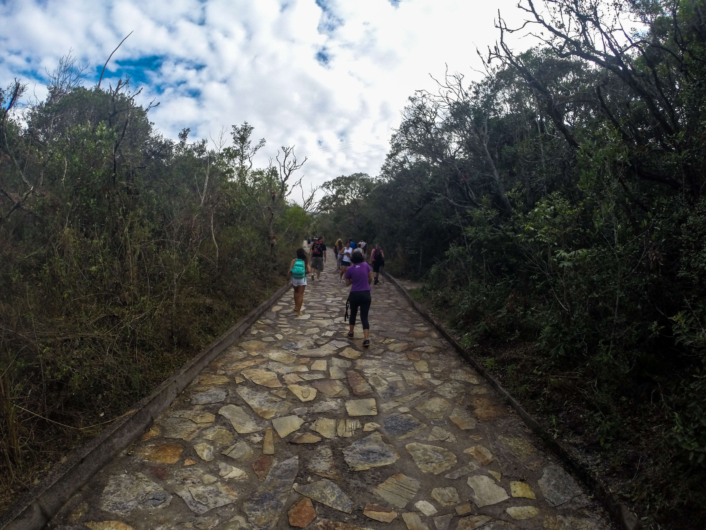
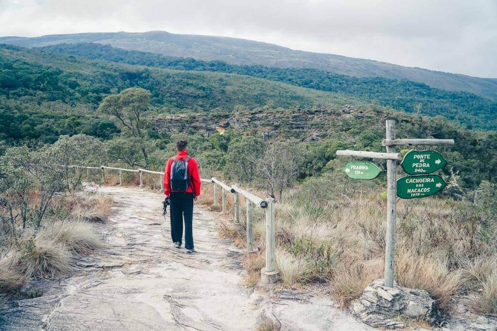
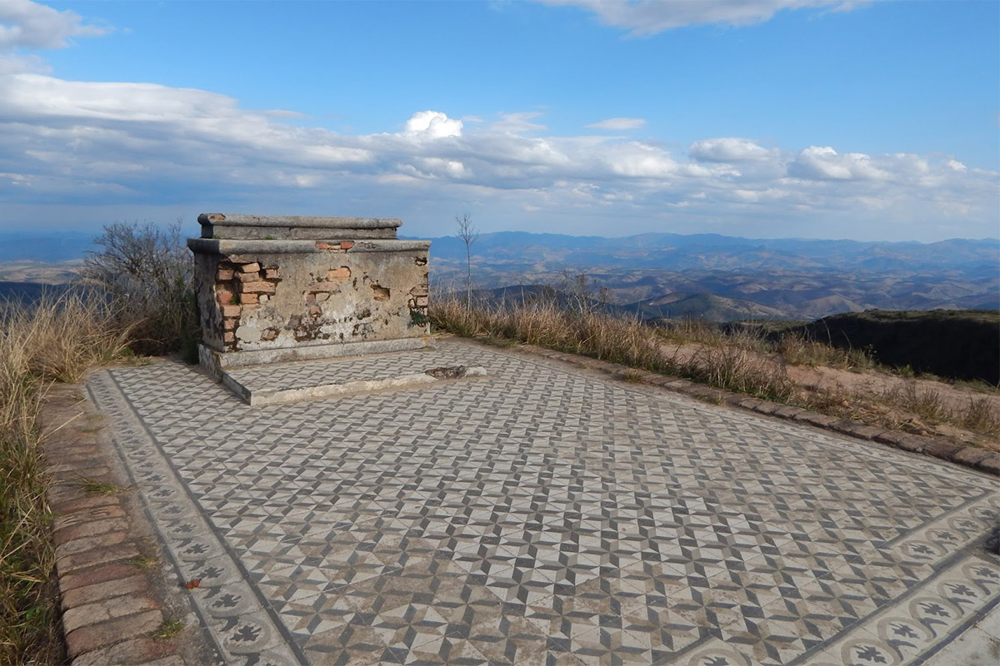

Se trata do menor roteiro em distância, mas considerado por muitos o mais bonito. Variados em atrativos naturais, como paredões, piscinas naturais, lagos, grutas e muitas cachoeiras, distribuídas em 5 km por trilhas em meio aos campos rupestres. Duração média de 4 a 5 hs.

A primeira coisa que você precisa saber sobre o Circuito da Janela do Céu em Ibitipoca é que a trilha de ida e volta tem aproximadamente 16km. Sim, é muito longo! E cansativo, principalmente pros sedentários. Leve em consideração que os primeiros 4km são apenas de subida, então esteja preparado.

Esse roteiro é o menos conhecido, mas também conta com belos cenários. Muita gente deixa de fazer esse caminho pela dificuldade – tem uma subida forte no final – e por não ter tantas atrações quanto os outros circuitos. O Pico do Pião é o ponto final da trilha e esse não é um caminho circular como o Circuito das Águas. Você vai e volta pelo mesmo trajeto.
 Ibitipoca
Ibitipoca Caminhadas
Caminhadas Pousadas
Pousadas P.Turisticos
P.Turisticos Contatos
Contatos